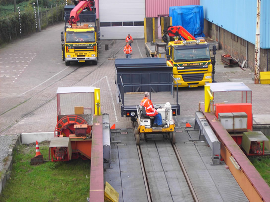
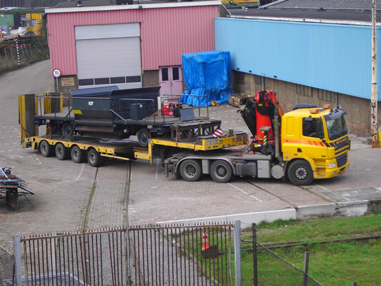
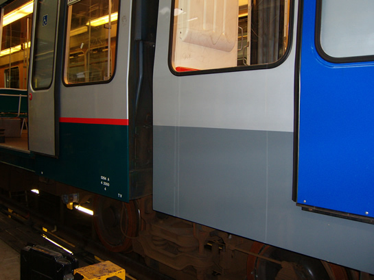

Meer poortjes gesloten en ander nieuws...
- zondag 07 december 2008 17:05
- Geschreven door Joachim
In het kader van de invoering van de OV-Chipkaart zijn op meer stations de toegangspoortjes definitief gesloten. De afgelopen weken gingen de poortjes op de stations Blaak, Oostplein, Gerdesiaweg, Nesselande, Alexander, Slinge, Maashaven, Rijnhaven, Wilhelminaplein, Leuvehaven en Stadhuis dicht. Er resteren nog drie stations waarvan de poortjes gesloten moeten worden: Centraal Station, Zuidplein en Beurs: de stations met de grootste reizigersaantallen. Een datum hiervoor is nog niet bekend.
AHOB Burgaslaan
Vorige week woensdag ging AHOB-systeem Burgaslaan in storing. Dit gebeurde omstreeks 17.30 uur. De oorzaak van de storing lag bij de motoraandrijving van de slagboom voor autoverkeer langs spoor 1. Deze had het begeven. Er werd besloten tot het plaatsen van een nieuwe aandrijving. Omstreeks 23.30 uur was dit karwei voltooid en was de storing opgelost.
5217
Rijtuig 5217 is nog steeds niet overgebracht naar Centrale Werkplaats Kleiweg voor schadeherstel na een aanrijding die plaatsvond op 25 oktober j.l. Eerder was het transport gepland op 8 november. Doordat een van de koppelingen van het rijtuig total-loss is, is het niet zeker of er een railtransport plaats gaat vinden, er kan echter niet goed gekoppeld worden met een andere railwagon. Actuele informatie over het transport zal te lezen zijn op het forum.

Rijtuig 5217 op spoor 127 aan de Waalhaven. Het gat in de zijkant is goed te zien. Op deze foto staat het rijtuig nog onder spanning, inmiddels is het rijtuig "doodgemaakt" en staat het dus zonder spanning.
Ballastwagens 7301 & 7302
De ballastwagens 7301 en 7302, die de afgelopen maanden verbleven op de Centrale Werkplaats Kleiweg zijn gereedgekomen na revisie. Vorige week donderdag gingen de ballastwagens op transport vanaf de Kleiweg richting lijnwerkplaats Waalhaven. Het transport vond plaats per dieplader. Hieronder enkele foto's van het transport.
Foto's met dank aan Robert v/d Burg.
Eerst wordt de wagen vanuit de CW de rolbrug opgereden.

Als de rolbrug naar het doelspoor gerold is, kan de wagon van de rolbrog gereden worden en in de juiste positie geplaatst worden.
Als dat gebeurd is, wordt de wagen op de dieplader getild.

De ballastwagen wordt verankerd aan de dieplader en het transport kan beginnen.
5264
Rijtuig 5264 verblijft voor de demontage van de downchopper op remise 's-Gravenweg. Inmiddels kunnen we vermelden dat een deel van bankjes in het rijtuig vuurrood geschilderd zijn. De 5264 werd afgelopen zomer gebruikt voor testritten op het toekomstige RandstadRail-tracé tussen Rotterdam Hofplein en Den Haag Centraal. We ontvingen onderstaande foto's van het rijtuig in de werkplaats aan de 's-Gravenweg.
Rijtuig 5264 op spoor 322-2. De voorruit is uit het rijtuig gehaald, i.v.m. lakwerkzaamheden.
Een deel van de bankjes in het rijtuig is vuurrood geschilderd.

Het is en blijft vreemd gezicht, het grijs en blauw dat in schril contrast staat met het normaal ogende groen en rood.
Oefening
Morgen vindt er een calamiteitenoefening plaats op en rond de Coolsingel en in metrostation Stadhuis. Hierdoor is er geen metroverkeer mogelijk tussen de metrostations Beurs en Centraal Station tussen 13.00 uur en 15.30 uur. Ook tram- en busverkeer wordt omgeleid. Reizigers kunnen enige hinder ondervinden. De RET heeft de afgelopen dagen reizigers zoveel mogelijk op de hoogte gesteld van het beperkte vervoersaanbod, m.b.v. flyers en omroep- en tekstberichten op de stations en haltes.